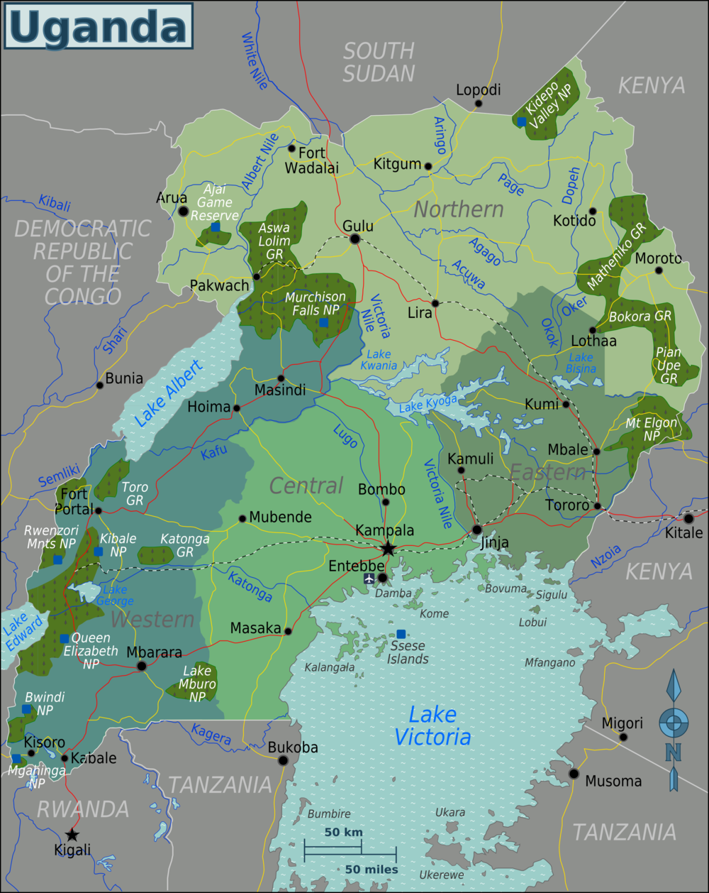
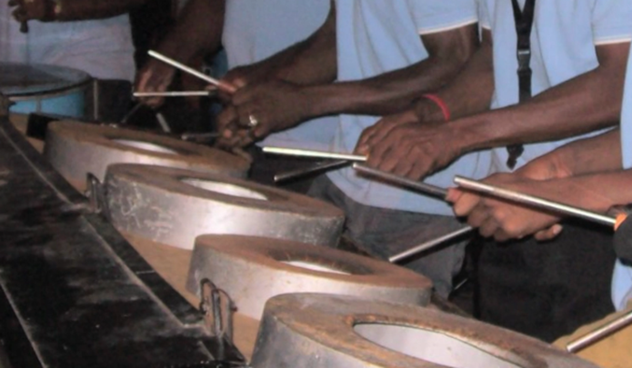
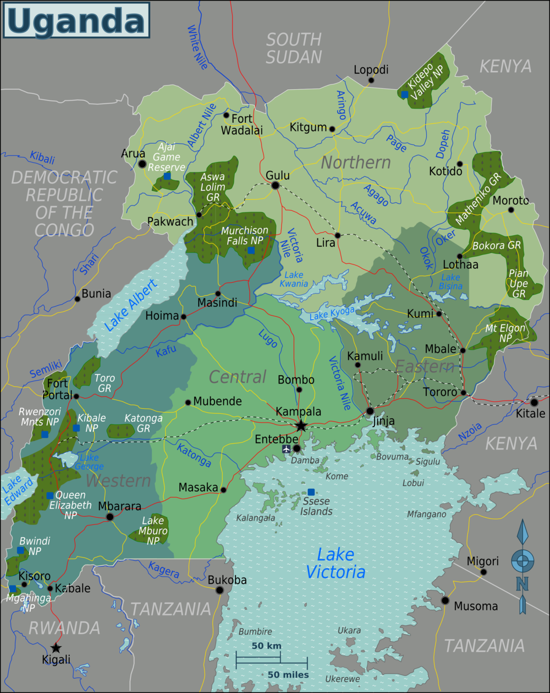
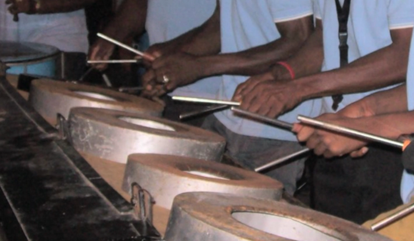

This website compares and contrasts the percussion styles from Trinidad & Tobago (further referred to as Tribago for simplicity) to that of Uganda.
I chose these two styles to compare and contrast because of their distinctly different entry-level skill requirements for their instruments, and they both have modern evolutions of some of their instruments, so they have a good balance of differences and similarities.
Click History to continue.